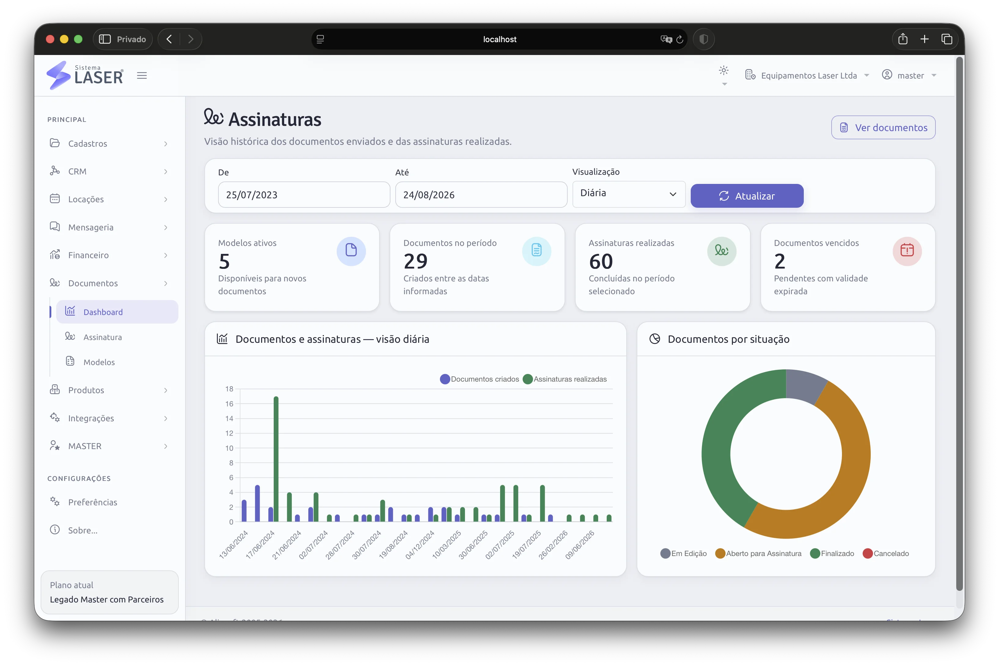

Prepare
Use um modelo ou envie o documento adequado à operação.
Solicite assinaturas em contratos e protocolos com fotos ou envie documentos apenas como notificação. Use o sistema de forma independente ou vinculado às locações e aos demais processos.

Cada documento mantém seu contexto, destinatários, situação e histórico em uma visão consultável.
Use um modelo ou envie o documento adequado à operação.
Solicite assinatura ou encaminhe apenas como notificação.
Consulte situações, assinaturas realizadas e vencimentos.
Formalize acordos, preserve evidências e comunique informações importantes sem espalhar arquivos por diferentes ferramentas.
Envie contratos e minutas para as pessoas que precisam formalizar o documento.
Reúna fotos, respostas e evidências do atendimento antes de solicitar a assinatura.
Defina quem deve assinar e acompanhe o andamento até a conclusão.
Quando não houver assinatura, envie o documento somente para ciência do destinatário.
O sistema de assinaturas funciona de forma independente para qualquer documento, mas ganha ainda mais contexto quando usado com os demais recursos do Sistema Laser.
Em uma locação, por exemplo, contratos, protocolos, fotos e outros documentos associados podem permanecer vinculados ao mesmo registro. A equipe consulta o histórico sem reconstruir o processo em e-mails ou pastas separadas.

Na demonstração, mostramos o envio, o acompanhamento e a vinculação dos documentos às locações da sua empresa.